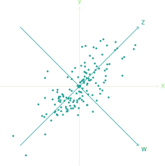

14 Kowariancja
Wariancja stanowi ilościowy opis rozproszenia rozkładu zmiennej. Opiszemy teraz jej dwuliniowy odpowiednik, który można traktować jak ilościowy opis zależności dwóch zmiennych losowych.
Definicja 14.1 Niech \(X\) i \(Y\) będą zmiennymi losowymi całkowalnymi z kwadratem.
Liczbę
\[
{\rm Cov}(X,Y) = \mathbb{E}\left[ (X-\mathbb{E}[X])(Y-\mathbb{E}[Y]) \right]
\] nazywamy kowariancją \(X\) i \(Y\).
Jeżeli \(\mathrm{Cov}(X,Y)=0\), to \(X\) i \(Y\) nazywamy nieskorelowanymi.
Zauważmy, że przy powyższych założeniach kowariancja jest dobrze zdefiniowana.
Lemma 14.1 (Nierówność Schwarza) Dla zmiennych losowych \(X\) i \(Y\), \[ \mathbb{E}[|XY|] \le \big( \mathbb{E}[X^2] \big)^{1/2}\big( \mathbb{E}[ Y^2] \big)^{1/2}, \]
Proof. Pozostawiamy jako zadanie. □
Zastępując \(X\) przez \(X -\mathbb{E}[X]\) oraz \(Y\) przez \(Y -\mathbb{E}[Y]\) otrzymujemy \[ {\rm Cov}(X,Y) \le \big( \mathbb{V}ar[ X] \big)^{1/2}\big( \mathbb{V}ar[ Y] \big)^{1/2}. \] Jeżeli więc \(X\) i \(Y\) są całkowalne z kwadratem, to \(\mathrm{Cov}(X,Y)<\infty\).
Twierdzenie 14.1 Niech \(X\), \(Y\) i \(Z\) będą zmiennymi losowymi całkowalnymi z kwadratem
- \(\mathrm{ Cov}(X,Y) = \mathbb{E}[XY] -\mathbb{E}[X] \mathbb{E}[Y]\).
- \(\mathrm{Cov}(X,X) = \mathbb{V}ar [X]\).
- \(\mathrm{Cov} (X,Y) = \mathrm{Cov} (Y,X)\).
- Kowariancja jest operatorem dwuliniowym
\[\begin{equation*} {\rm Cov}(aX+bY,Z) = a{\rm Cov}(X,Z) + b {\rm Cov}(Y,Z). \end{equation*}\]
Proof. Ćwiczenie. □
Przykład 14.1 Niech \(X\) i \(Y\) będą takie, że dwuwymiarowy wektor losowy \(\vec{X}=(X,Y)\) ma dwuwymiarowy rozkład normalny z parametrami \(\vec{m}=(0,0)\) oraz \[\begin{equation*} \Sigma = \left( \begin{array}{cc} 1 & \rho \\ \rho & 1 \end{array} \right) \end{equation*}\] dla \(\rho \in (-1,1)\). Przypomnijmy, że wektor \(\vec{X}\) ma rozkład o gęstości \[\begin{equation*} f_\vec{X}(x,y) = \frac{1}{2 \pi \mathrm{det}(\Sigma)^{1/2}} e^{ -\langle \Sigma^{-1}(x,y)^T, (x,y)^T \rangle /2} \end{equation*}\] Sprawdzimy najpierw ile wynosi średnia \(X\). Stosując podstawienie \(z=-x\) i \(w=-y\) otrzymujemy \[\begin{align*} \mathbb{E}[X] & = \int_{\mathbb{R}^2} x f_{\vec{X}}(x,y) \mathrm{d}xy \\ & = \int_{\mathbb{R}^2} -z f_{\vec{X}}(z,w) \mathrm{d}zw. \end{align*}\] Wobec czego \(\mathbb{E}[X]=0\). Podobnie sprawdzamy, że \(\mathbb{E}[Y]=0\). Ile wynosi \(\mathrm{Cov}(X,Y)\)? Na pierwszy rzut oka wyrażenie całkowe \[\begin{align*} &\mathrm{Cov}(X,Y) = \\ &\int_{\mathbb{R}^2} \frac{xy}{2 \pi \mathrm{det}(\Sigma)^{1/2}} e^{ -\langle \Sigma^{-1}(x,y)^T, (x,y)^T \rangle /2} \mathrm{d}xy \end{align*}\] wygląda niezachęcająco. Aby się z nim efektywnie uporać musimy przedstawić wyraz wykładniczy w prostszej postaci. Sprowadza się to do analizy wykładnika \[\begin{equation*} \langle \Sigma^{-1}(x,y)^T, (x,y)^T \rangle \end{equation*}\] czyli formy kwadratowej związanej z macierzą \(\Sigma\). W pierwszym kroku diagonalizujemy \(\Sigma\). Otrzymując \[\begin{equation*} \Sigma = Q \left( \begin{array}{cc} 1+\rho & 0 \\ 0 & 1-\rho \end{array} \right) Q^T, \end{equation*}\] gdzie \[\begin{equation*} Q = \left( \begin{array}{cc} \sqrt{2}/2 & \sqrt{2}/2 \\ \sqrt{2}/2 & -\sqrt{2}/2 \end{array} \right) \end{equation*}\] jest macierzą symetrii względem prostej \(y=\tan(\pi/8)x\). Jeżeli zatem położymy \[\begin{equation} \left( \begin{array}{c} z \\ w \end{array} \right) = Q^T \left( \begin{array}{c} x \\ y \end{array} \right) \tag{14.1} \end{equation}\] to \[\begin{equation*} \langle \Sigma^{-1}(x,y)^T, (x,y)^T \rangle =\\ \left\langle\left( \begin{array}{cc} 1/(1+\rho) & 0 \\ 0 & 1/(1-\rho) \end{array} \right) \left( \begin{array}{c} z \\ w \end{array} \right) , \left( \begin{array}{c} z \\ w \end{array} \right) \right\rangle \\ =\frac{z^2}{1+\rho} + \frac{w^2}{1-\rho}. \end{equation*}\] Współrzędne \((z,w)\) do odpowiednie podstawienie dla naszej całki. Zauważmy, że \(\mathrm{det}(Q)=1\) oraz, że \[\begin{equation*} xy=\frac{z^2-w^2}{2}. \end{equation*}\] Stąd, stosując podstawienie (14.1) w całce otrzymujemy \[\begin{equation*} \mathrm{Cov}(X,Y) = \\\int_{\mathbb{R}^2} \frac{z^2-w^2}{2} \frac{1}{\sqrt{2\pi}(1+\rho)} e^{-z^2/2(1+\rho)} \\ \frac{1}{\sqrt{2\pi}(1-\rho)} e^{-w^2/2(1-\rho)} \mathrm{d}zw. \end{equation*}\] Wykorzystując znane nam już tożsamości \[\begin{equation*} \int_\mathbb{R}\frac{1}{\sqrt{2\pi}(1+\rho)} e^{-z^2/2(1+\rho)}\mathrm{d}z =\\ \int_\mathbb{R}\frac{1}{\sqrt{2\pi}(1-\rho)} e^{-w^2/2(1-\rho)} \mathrm{d}w=1 \end{equation*}\] oraz \[\begin{equation*} \int_\mathbb{R}\frac{z^2}{\sqrt{2\pi}(1+\rho)} e^{-z^2/2(1+\rho)}\mathrm{d}z = 1+\rho \end{equation*}\]
\[\begin{equation*} \int_\mathbb{R}\frac{w^2}{\sqrt{2\pi}(1-\rho)} e^{-w^2/2(1-\rho)} \mathrm{d}w=1-\rho \end{equation*}\] Otrzymujemy \[\begin{equation*} \mathrm{Cov}(X,Y) = \frac{1+\rho}{2} - \frac{1-\rho}{2} = \rho. \end{equation*}\]
Remark. Przy użyciu powyższych rachunków można pokazać, że zmienne losowe \(Z\) i \(W)\) dane przez \[\begin{equation*} \left( \begin{array}{c} Z \\ W \end{array} \right) = Q^T \left( \begin{array}{c} X \\ Y \end{array} \right) \end{equation*}\] są niezależne. Jeżeli wylosujemy \(100\) punktów z rozkładu normalnego z powyższego przykładu (dla \(\rho=2/3\)) to widzimy, że we współrzędnych \(x,y\) punkty układają się wzdłuż prostej \(x=y\).  We współrzędnych \(zw\) natomiast punkty układają się wzdłuż osi \(z\).
Remark. Jeżeli \(X,Y\) są niezależne, to \(\mathrm{Cov}(X,Y)=0\) (wynika to z pkt. 1 powyższego twierdzenia), ale nie jest prawdziwa odwrotna implikacja. Kowariancja mierzy jak bardzo zmienne losowe \(X\), \(Y\) są zależne.
Twierdzenie 14.2 Jeżeli \(\mathrm{E}[ X_i^2]<\infty\) dla \(i=1,\ldots, n\), to \[ \mathbb{V}ar(X_1+\ldots+ X_n) = \sum_{k=1}^n \mathbb{V}ar X_k \\+ 2 \sum_{k<l}{\rm Cov}(X_k,X_l). \] W szczególności jeżeli \(X_i\) są wzajemnie nieskorelowane, to \[ \mathbb{V}ar(X_1+\ldots+ X_n) = \sum_{k=1}^n \mathbb{V}ar X_k . \]
Proof. Teza wynika z bezpośredniego rachunku. Mamy \[\begin{align*} &\mathbb{V}ar(X_1+\ldots+ X_n) \\ = & \mathbb{E}\Big[ X_1+\ldots + X_n - \mathbb{E}\big[X_1+\ldots + X_n \big] \Big]^2\\ = & \mathbb{E}\bigg[ \sum_{j=1}^n (X_j -\mathbb{E} X_j) \bigg]^2\\ = & \sum_{j=1}^n\mathbb{E}(X_j-\mathbb{E} X_j)^2 \\ & + 2\sum_{k<l} \mathbb{E}\big[(X_k-\mathbb{E} X_k)(X_l-\mathbb{E} X_l,)\big]\\ = & \sum_{k=1}^n \mathbb{V}ar X_k + 2 \sum_{k<l}{\rm Cov}(X_k,X_l). \end{align*}\] □
Przykład 14.2 Niech \(\sigma\) będzie losową permutacją liczb \(1,\ldots,n\) i niech \(X\) oznacza liczbę punktów stałych \(\sigma\). Szukamy \(\mathbb{V}ar [X]\).
Niech \[X_i = \left\{\begin{array}{cc} 1 & \mbox{ jeżeli $i$ jest punktem stałym} \\ 0 & \mbox{ jeżeli $i$ nie jest punktem stałym} \end{array} \right. \] Wtedy \(X = \sum_{i=1}^n X_i\). Wyliczamy \[\begin{align*} \mathbb{E} [X_i] &= \frac 1n,\quad \mathbb{E} [X] = 1,\\ \mathbb{E} [X_iX_j] &= \mathbb{P}[X_i X_j = 1] = \frac{1}{n(n-1)},\quad \mbox{dla }i\not=j \\ \mathbb{V}ar [X_i] &= \mathbb{E} \left[X_i^2\right] - (\mathbb{E} [X_i])^2 = \frac{n-1}{n^2}. \end{align*}\] Wówczas z powyższego twierdzenia \[\begin{align*} \mathbb{V}ar X = & n\cdot \frac{n-1}{n^2} \\ & + 2\cdot \frac{n(n-1)}2\cdot\bigg( \frac 1{n(n-1)} - \frac 1{n^2} \bigg) \\ =& \frac{n-1}n + n\bigg(1 - \frac{n-1}{n}\bigg) = 1. \end{align*}\]